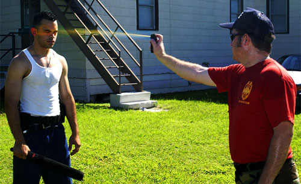
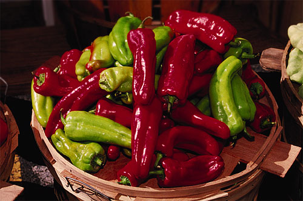

Pepper Spray

To appreciate the effects of pepper spray, police officers are sprayed with it.
"The act of policing is, in order to punish less often, to punish more severely."
Napoleon Bonaparte
Pepper spray (also known as Oleoresin Capsicum spray, OC spray, or capsicum spray) is a chemical compound known as a lacrymatory agent that irritates the eyes and nose causing tears, pain, and temporary blindness. Pepper spray is a “less-than-lethal” force weapon used by police officers to subdue combative or aggressive suspects.
In Canada, pepper spray is classified as a prohibited weapon. Numerous dog and bear pepper sprays are legal. However, if any such spray were used against humans, the user most likely will be prosecuted.
Capsaicin in Pepper Spray
Bell peppers and chili peppers are members of the Capsicum genus. Capsaicin is not found in bell peppers. Chili peppers contain various amounts of capsaicin. Jalapenos, cayennes, and habaneros are all types of chili peppers.
The active ingredient in pepper spray is Capsaicin, a tasteless and odourless powdered extract from chili peppers. The liquid concentrate made from this powder and used in pepper sprays is Oleoresin Capsaicin (OC).
Capsaicin is used in modern Western medicine—mainly in topical creams that help stimulate circulation and relieve pain.

Chili Peppers